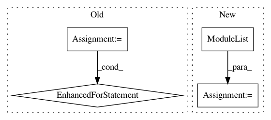

c9b787a1fa1757e692db3f5eaff30a372b0c9332,gpytorch/kernels/lcm_kernel.py,LCMKernel,__init__,#LCMKernel#Any#Any#Any#Any#,14
Before Change
raise ValueError("At least one base kernel must be provided.")
super(LCMKernel, self).__init__()
self.base_kernel_list = base_kernel_list
self.lcm_size = len(base_kernel_list)
self.covar_module_list = [None] * self.lcm_size
for i in range(self.lcm_size):
self.covar_module_list[i] = MultitaskKernel(self.base_kernel_list[i],
n_tasks=n_tasks, rank=1,
task_covar_prior=task_covar_prior)
def forward_diag(self, x1, x2):
Args:
After Change
if not isinstance(k, Kernel):
raise ValueError("base_kernels must only contain Kernel objects")
super(LCMKernel, self).__init__()
self.covar_module_list = ModuleList([
MultitaskKernel(base_kernel, n_tasks=n_tasks, rank=rank, task_covar_prior=task_covar_prior)
for base_kernel in base_kernels
])
def forward_diag(self, x1, x2):
Args:
In pattern: SUPERPATTERN
Frequency: 4
Non-data size: 4
Instances
Project Name: cornellius-gp/gpytorch
Commit Name: c9b787a1fa1757e692db3f5eaff30a372b0c9332
Time: 2018-09-18
Author: krajkumar@stanford.edu
File Name: gpytorch/kernels/lcm_kernel.py
Class Name: LCMKernel
Method Name: __init__
Project Name: cornellius-gp/gpytorch
Commit Name: ad31d8e18208864bd2aa32ed2f555ae25decece1
Time: 2018-09-23
Author: krajkumar@stanford.edu
File Name: gpytorch/kernels/lcm_kernel.py
Class Name: LCMKernel
Method Name: __init__
Project Name: rusty1s/pytorch_geometric
Commit Name: 2824bccbb4817467cf63283f5366f4134949d0b4
Time: 2019-06-10
Author: ekagra.ranjan@gmail.com
File Name: benchmark/kernel/graph_sage.py
Class Name: GraphSAGEWithJK
Method Name: __init__
Project Name: rusty1s/pytorch_geometric
Commit Name: 2824bccbb4817467cf63283f5366f4134949d0b4
Time: 2019-06-10
Author: ekagra.ranjan@gmail.com
File Name: benchmark/kernel/gcn.py
Class Name: GCNWithJK
Method Name: __init__